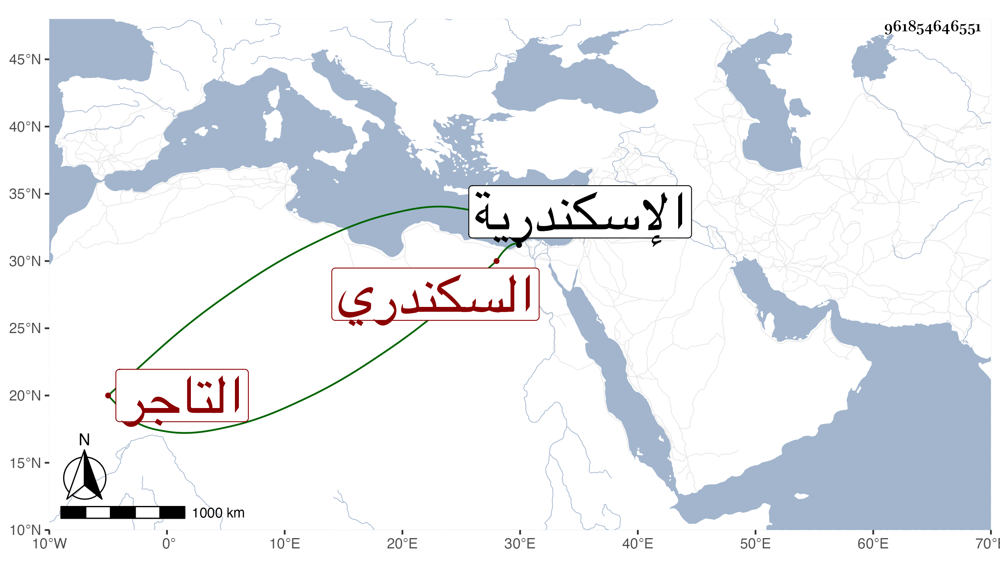

0902Sakhawi.DawLamic.ITO20230111-ara1.EIS1600.961854646551
Biography ID: 961854646551
214
محمد بن موسى الشمس التروجى الاصل السكندري التاجر ويعرف بابن الفقيه موسى. مات في ربيع الأول سنة خمس وثمانين وكان من التجار والمذكورين بالتضييق على نفسه ومزيد الامساك مع مداومته على التلاوة والستر والتصدق وتزوج بابنة الجمال بن عيسى الحنبلي فما رضيت عشرته ففارقها واستقر به الاشرف قايتباى في نظر الذخيرة باسكندرية مع المتجر السلطاني عقب البرهان . البرنتيشي ولذا رسم على بعض أتباعه واستؤصلت تركته ومع ذلك فلم توف ما قيل أنه عليه مع بيع قاعة أنشأها بدرب الأتراك صدرت منه وقفیتها رحمه الله وعفا عنه.
